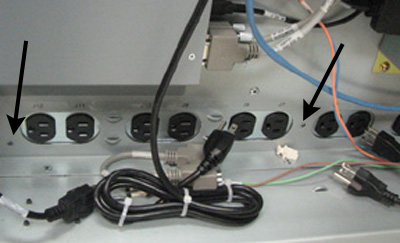

Operating Documentation
Direction 5440000, Rev# 5
Module Version 1.0, Version Date 9/23/08
Operating Documentation |
| ||||
| Electrocution Hazard! | ||||
| Hazardous voltages exist in the goc when energized. | ||||
| before beginning any work, shut down software if still running. lockout/tagout power to the GOC before Continuing. Please note: the GOC supports an optional ups. please confirm your respective site configuration. |
Remove both enclosure covers (left and right) from the GOC by removing 2 screws from the bottom of both panels. See Illustration 1 and Illustration 2.
Disconnect ground cables from enclosure covers.
Remove strain relief plate from power cable. See Illustration 3.
Disconnect Power cable, and connector, from PDU.
Remove retaining screw from plate. See Illustration 4.
Disconnect ground cable from PDU. See Illustration 5.
Remove 2 screws from side of PDU and disconnect DC power cables from PDU. See Illustration 6.
Illustration 6: Disconnect AC Cables

Remove plate at rear of PDU by removing 2 screws at the top of plate and lifting it upward. See Illustration 7.
Illustration 7: Remove Plate

Slide PDU out of the back of the computer, insert the replacement PDU and reverse disassembly procedures.
Restart the GOC.
Log in to verify proper operation of the system.